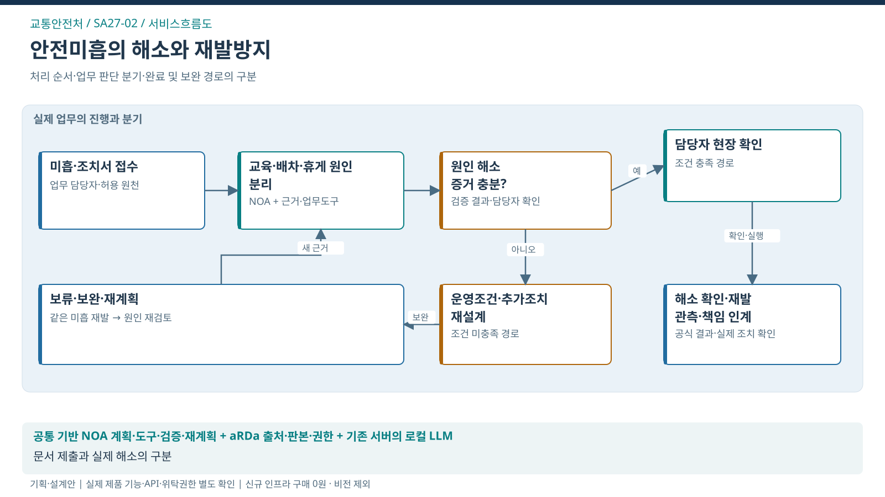

교통안전처 / SERVICE FLOW
안전미흡의 실제 해소와 재발방지
조치서 제출 이후 잔여 위험의 실제 해소와 재발방지

처리의 대상
미흡·원인·조치·해소 증거
업무 전환
미흡 원인에 맞게 확인질문과 조치·증거 계획을 구성하고 조치가 실패하면 대안을 재계획
완료의 기준
권한자가 실제 해소 증거를 확인하고 잔여위험·재발 관측 책임을 인수함
이 서비스의 법정업무 기반
교통안전처와 연결된 업무
법적 수행범위에서 출발하는 AX 제안
연결은 소관·예산권의 확정과 구분
- 운수회사 안전관리·점검 ↗법정 위탁
- 버스·택시 종사자 자격·적성·이력 ↗법정 위탁
- 화물 종사자 자격·적성·경력 ↗법정 위탁
문제 근거와 기대편익
업무 근거: TS 공개업무 안내
해결할 문제 가설: 교육 이수나 문서 제출이 위험 원인 제거를 보장하지 않는다. 현재 미해소·재발 수준은 별도 확인 대상임
수혜자: 운수종사자·승객·도로 이용자
기대효과: 기관 — 증빙 제출과 실제 개선의 일치 / 국민 — 미해결 위험 방치와 동일 미흡의 반복 감소
확인 지표: 확인된 미흡의 실질 해소율 / 재발률 / 부적절 종결률
기준값·목표 개선율: 현업 실증으로 확정
전문가 역할·제외범위·검증조건
전문 판단·실행: 운수회사의 실제 개선과 전문 담당자의 현장·증거 확인
이번 과업 제외: 자동 행정처분·승무 차단·개인 위험등급·안전 적합 판정
선행 확인: 점검/조치 기록·실제 후속관측·전결·기존 지도 이행평가 계약의 증분 확인
제품 역할은 적용안. TS 설치·성능·현업 효과의 검증 완료와 구분.